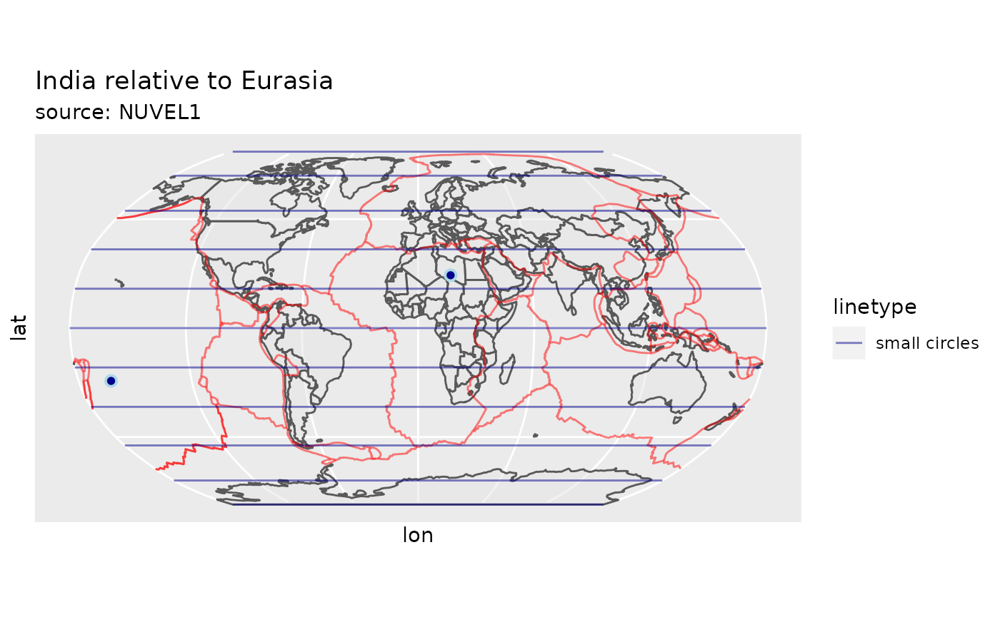
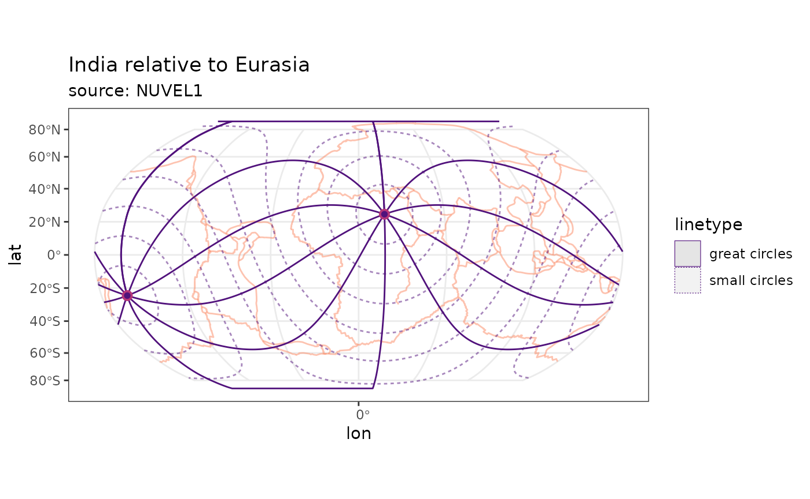
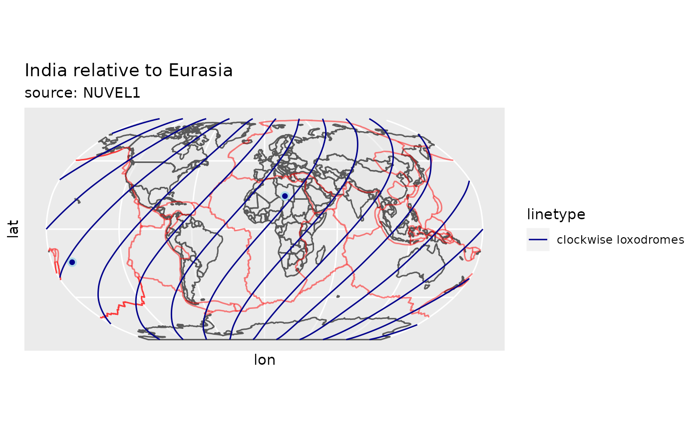

Plotting trajectories of theoretical stress directions
Tobias Stephan
2025-12-03
Source:vignettes/stress_trajectories.Rmd
stress_trajectories.RmdThis vignette teaches you how to plot the trajectories of the predicted stress directions.
Equivalent rotations
Relative plate motions from a set of (global) plate motions can be retrieved by transforming the set of the Euler rotations parameters to equivalent rotations.
The NUVEL1 data set offers the global plate motions relative to the Pacific plate (DeMets et al. 1990). In order to extract the plate motions between two other plates (e.g. all plates relative to Eurasia), one has to transform the rotations in to a new, equivalent reference system (i.e. all rotation with respect to (wrt.) Eurasia).
In tectonicr this can be done with
equivalent_rotation():
data("nuvel1")
nuvel1.eu <- equivalent_rotation(nuvel1, fixed = "eu")
head(nuvel1.eu)
#> plate.rot lat lon angle plate.fix
#> af af 21.22431 -20.25390 0.12839397 eu
#> an an 37.85378 77.54263 0.05402503 eu
#> ar ar 24.77897 14.14654 0.51993229 eu
#> au au 15.28437 40.87794 0.71935116 eu
#> ca ca -50.85213 -50.33611 0.12128773 eu
#> co co 19.84642 -115.85295 1.36455727 euAlternatively, the PB2002 model by Bird (2003) is also provided as an ready-to use example dataset for global plate motions.
data("pb2002")
pb2002.eu <- equivalent_rotation(pb2002, fixed = "eu")
head(pb2002.eu)
#> plate.rot lat lon angle plate.fix
#> af af 21.21561 -20.26957 0.12277039 eu
#> am am 22.31703 -73.10293 0.09095410 eu
#> an an 37.88026 77.51306 0.05166503 eu
#> ap ap -34.90145 -75.14215 0.42687654 eu
#> ar ar 28.26668 11.83784 0.53270842 eu
#> as as -27.83397 95.48900 0.27101254 euPlotting Pole of Rotation Grids
To visualize the theoretical trajectories of the direction of
(great circles, small circles, and loxodomes), we need to transform the
locations from the geographical coordinate system into the PoR
coordinate system. The transformations are done through the function
functions geographical_to_PoR() and
PoR_to_geographical(). They are the base of the functions
eulerpole_smallcircles(),
eulerpole_greatcircles(), and
eulerpole_loxodromes() that allow to draw the theoretical
trajectories in geographical coordinates.
Small Circles
Function eulerpole_smallcircles(x, gridsize) returns
small circles as as simple feature(sf) by giving a
data.frame of the PoR coordinates in lat and lon
(x) and the number of small circles (n).
For example the small circles around the pole of the relative motion of the Indian plate relative to the Eurasian plate (transformed from the from the NUVEL1 model).
por <-
subset(nuvel1.eu, nuvel1$plate.rot == "in") # India relative to EurasiaThe returnclass option in
eulerpole_smallcircles() provides the output types
"sf" (for a simple feature) and "sp"
(Spatial* object) for the small circles.
To eventually plot the small circles with ggplot, I
recommend to extract a sf feature and plot the it with
geom_sf():
por.sm <- eulerpole_smallcircles(por)
data("plates") # load plate boundary data set
# world <- rnaturalearth::ne_countries(scale = "small", returnclass = "sf")
ggplot() +
# geom_sf(data = world, alpha = .5) +
geom_sf(
data = plates,
color = "#FB8861FF",
alpha = .5
) +
labs(title = "India relative to Eurasia", subtitle = "source: NUVEL1") +
geom_sf(
data = por.sm,
aes(lty = "small circles"),
color = "#51127CFF", fill = NA,
alpha = .5
) +
geom_point(
data = por,
aes(lon, lat),
shape = 21,
colour = "#B63679FF",
size = 2,
fill = "#51127CFF",
stroke = 1
) +
geom_point(
data = por,
aes(lon + 180, -lat),
shape = 21,
colour = "#B63679FF",
size = 2,
fill = "#51127CFF",
stroke = 1
) +
coord_sf(default_crs = "WGS84", crs = sf::st_crs("ESRI:54030"))
Great Circles
Great circles are lines that cut the small circles at
90
and the PoR. Function eulerpole_greatcircles(x, n) returns
great circles as sf object by giving a
data.frame of the Pole of Rotation (PoR) coordinates in lat
and lon (x) and the number of great circles n,
or the great circle angles (360/d).
por.gm <- eulerpole_greatcircles(por)
ggplot() +
# geom_sf(data = world, alpha = .5) +
geom_sf(
data = plates,
color = "#FB8861FF",
alpha = .5
) +
labs(title = "India relative to Eurasia", subtitle = "source: NUVEL1") +
geom_sf(
data = por.sm,
aes(lty = "small circles"),
color = "#51127CFF",
alpha = .5
) +
geom_sf(
data = por.gm,
aes(lty = "great circles"),
color = "#51127CFF"
) +
geom_point(
data = por,
aes(lon, lat),
shape = 21,
colour = "#B63679FF",
size = 2,
fill = "#51127CFF",
stroke = 1
) +
geom_point(
data = por,
aes(lon + 180, -lat),
shape = 21,
colour = "#B63679FF",
size = 2,
fill = "#51127CFF",
stroke = 1
) +
coord_sf(default_crs = "WGS84", crs = sf::st_crs("ESRI:54030"))
Loxodromes
Loxodrome (also called Rhumb Line) is a curve cutting the small circles at a constant angle. Thus, small and great circles are 0 and 90 loxodromes, respectively.
Function eulerpole_loxodromes(x, n) returns loxodromes
as sf object by giving a data.frame of the PoR
coordinates in lat and lon (x) and the angle between the
loxodromes, the direction, and the sense.
por.ld <- eulerpole_loxodromes(x = por, angle = 45, n = 10, cw = TRUE)
ggplot() +
labs(title = "India relative to Eurasia", subtitle = "source: NUVEL1") +
# geom_sf(data = world, alpha = .5) +
geom_sf(
data = plates,
color = "#FB8861FF",
alpha = .5
) +
geom_sf(
data = por.sm,
aes(lty = "small circles"),
color = "#51127CFF",
alpha = .5
) +
geom_sf(
data = por.ld,
aes(lty = "clockwise loxodromes"),
color = "#51127CFF"
) +
geom_point(
data = por,
aes(lon, lat),
shape = 21,
colour = "#B63679FF",
size = 2,
fill = "#51127CFF",
stroke = 1
) +
geom_point(
data = por,
aes(lon + 180, -lat),
shape = 21,
colour = "#B63679FF",
size = 2,
fill = "#51127CFF",
stroke = 1
) +
coord_sf(default_crs = "WGS84", crs = sf::st_crs("ESRI:54030"))
References
Bird, Peter. 2003. “An Updated Digital Model of Plate Boundaries” Geochemistry, Geophysics, Geosystems 4 (3). doi: 10.1029/2001gc000252.
DeMets, C., R. G. Gordon, D. F. Argus, and S. Stein. 1990. “Current Plate Motions” Geophysical Journal International 101 (2): 425–78. doi: 10.1111/j.1365-246x.1990.tb06579.x.